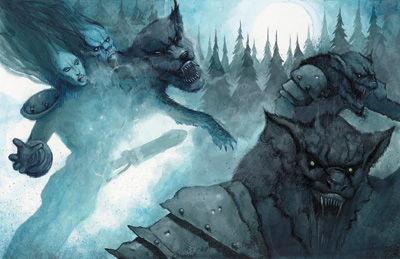

|
猛兽侠（Ｎａｔｕｒｅ’ｓ Ｗａｒｒｉｏｒ）

猛兽侠是荒野的保卫者，大自然的守护者……换句话说常常就是那些“长期”保持野兽形态的德鲁伊们。这个进阶职业成员们之间的共通性是超越于种族和外表之上的。
当一个人获得变化为“低等动物”形态的能力后，她有时就会以一个全新的视角思考自己的人生观，甚至会开始羡慕她的这另一种形态。在动物（或元素）形态下，或在渴望这种形态下的力量时，她很快就会强烈地感觉到自己已经同大自然密不可分了。事实上，当她在野兽形态上不断提高能力的同时，也正在逐渐的牺牲她的天生性状。
许多人认为猛兽侠是孤独而狂热的，甚至甚于那些最孤独的德鲁伊或巡林客。其实，猛兽侠们是十分有团体性的。他们之间会经常交流--有时是通过动物的沟通方式；当离开自己的领土后，甚至还会面对面--同时他们对于“文明的事物”会抱着谨慎的审视态度。猛兽侠会选择提高的更多的是他们的动物本能，而不是社会交际能力，而且，他们会对那些与大自然不“合拍”的人们越来越粗暴并失去耐心。在猛兽侠中，一个人持续一种野兽或元素形态数天甚至数周也并不鲜见；要么就是会不断地变化一种形态到另一种，一种一种地变化，但就是不会变回到其原来的类人生物形态。
事实上，几乎所有猛兽侠都来自德鲁伊职业，但也有一些成员是通过从其它进阶职业或生物自身获得的变化形态能力来进阶猛兽侠的。许多好战的德鲁伊--那些有战士、野蛮人或巡林客等级的--发现了这个不二之选。
生命骰数：ｄ１０。
职业需求
要具备猛兽侠的资格，人物必须符合以下全部条件。
阵营：任何中立阵营。
基础攻击加值：＋４
技能：“知识”（自然）４级，“知识”（界域）２级，“野外求生”８级
专长：追踪。
特殊要求：自然变身能力。
本职技能
猛兽侠的本职技能如下（括号中为该技能的关键属性）：“交涉”（魅力），“驯养动物”（魅力），“威吓”（魅力），“跳跃”（力量），“知识”（自然）（智力），“聆听”（感知），“野外求生”（感知）和“游泳”（力量）。
升级可得到的技能点数：２＋智力调整值。
表２－２４：猛兽侠
等级 ＢＡＢ 强韧 反射 意志 特殊
１ ＋１ ＋２ ＋０ ＋０ 天然装备，野性
２ ＋２ ＋３ ＋０ ＋０ 现有最高神术等级+1
３ ＋３ ＋３ ＋１ ＋１ 天然装备
４ ＋４ ＋４ ＋１ ＋１ 现有最高神术等级+1
５ ＋５ ＋４ ＋１ ＋１ 天然装备
职业特性
下述均为猛兽侠进阶职业的职业特性：
擅长武器和防具：猛兽侠不擅长任何武器与防具。
每日法数量：每次达到猛兽侠职业的偶数等级时，猛兽侠的每日法术数量都会增加，就像之前的施神术职业一样。若她在达到２级之前没有施展神术的职业，她将得到１德鲁伊施法等级。但除了增加施法等级外，她不能获得之前施法职业等级的其它能力。若人物在成为猛兽侠之前拥有多个施神术职业，则必须选择要将此升级的猛兽侠等级加在哪一种职业上，以决定新的每日法术数量。
天然装备（Ｎａｔｕｒｅ’ｓ Ａｒｍａｍｅｎｔ）（超自然能力）：每次达到猛兽侠职业的奇数等级时，猛兽侠都可以从以下能力中任选其一。这些能力，除特别注明，都只有在野兽形态时才可用。
鳄之甲（Ａｒｍｏｒ ｏｆ ｔｈｅ Ｃｒｏｃｏｄｉｌｅ）：每升一级，猛兽侠的天然防护等级会＋１。此提升为真实升高，并非增强加值。
能量之焰（Ｂｌａｚｅ ｏｆ Ｐｏｗｅｒ）：当处于火元素形态时，猛兽侠周身会被一层能量之焰包围，作用相当于其施法者等级为德鲁伊等级（如果有）与猛兽侠等级之和时所施展的火焰护盾。
灰熊之爪（Ｃｌａｗｓ ｏｆ Ｇｒｉｚｚｌｙ）：当使用天生武器时，猛兽侠可以获得＋３伤害点数的奖励。
大地之抗（Ｅａｒｔｈ’ｓ Ｒｅｓｉｌｉｅｎｃｅ）：猛兽侠获得获得＋３／－的伤害减免。
自然武器（Ｎａｔｕｒｅ’ｓ Ｗｅａｐｏｎ）：当使用天生武器时，猛兽侠在其攻击检定上获得＋１的增强加值，她的徒手击打视为如同魔法武器，能够伤害到有伤害减免能力的怪物。
云之袍（Ｒｏｂｅ ｏｆ Ｃｌｏｕｄｓ）：当处于风元素形态时，猛兽侠将会被一层云雾环绕，效果每等级可持续１分钟（或直到她主动取消此效果），这属于一个事实动作。此能力可以使猛兽侠进入隐蔽状态，但与此同时，猛兽侠也无法行动或看到外界。
水之穿流（Ｗａｔｅｒ’ｓ Ｆｌｏｗ）：要使用此能力，猛兽侠必须使用自然变身能力变为一种元素形态。每日三次，人物可以变形为一股湍急的水流，这属于一个移动的部分动作。在此形态下，她可以以其陆上基本速度移动，而不会引发借机攻击。但她只能移动。移动结束后，她会立刻变为其变化之前的形态。用此能力时猛兽侠不必处于野兽形态。
野之异变（Ｗｉｌｄ Ｇｒｏｗｔｈ）：猛兽侠获得１点快速医疗能力。
飓风之翼（Ｗｉｎｇｓ ｏｆ Ｈｕｒｒｉｃａｎｅ）：当处于鸟类形态或风元素形态时，她的飞行基本速度增加３０尺，她的一种机动性也会得到提升（如此，好的机动性会变为完美。）。
野性（Ｗｉｌｄｉｎｇ）（超自然能力）：当计算猛兽侠的自然变身能力和理解野生动物检定时，可以累加人物的猛兽侠等级和德鲁伊等级（以及其它可获得这些能力的职业等级）。例如：一个８级德鲁伊／３级猛兽侠可视同一个１１级德鲁伊的自然变身的体型、类型、以及变身周期（她能够自然变身为超小型生物，每日四次。）。当进行针对动物和魔法兽的野生动物检定时，她具有＋１１的加值（而不是＋８）。
猛兽侠样本：
贝什娅（变身呀．．．）
Ｂｅｓｈｙａ
人类 女性
６ 德鲁伊／４ 猛兽侠
挑战级别：１０
中型人形生物
ＨＤ：（６ｄ８＋１２）＋（４ｄ１０＋８）
ＨＰ：６９
先攻调整：＋３
速度：３０英尺
ＡＣ：２０ 接触１３，措手不及１８
基础攻击值：＋８
擒抱：＋９
攻击：＋１０近战（１ｄ６＋２／１８－２０，＋１弯刀）或＋１２远程（１ｄ４，精工投石索）
全力攻击：＋１０／＋５近战（１ｄ６＋２／１８－２０，＋１弯刀）或＋１２／＋７远程（１ｄ４，精工投石索）
ＳＡ：法术。
ＳＱ：动物伙伴；鳄之甲；灰熊之爪；自然智识；抗自然诱惑；自发施法；无踪步；理解野生动物；自然变身４／日；野性；穿林。
阵营：中立善良。
豁免：强韧＋１１，反射＋６，意志＋９
属性：力量：１２，敏捷：１６，体质：１４，智力：１０，感知：１６，魅力：８。
技能和专长：专注＋１１，驯养动物＋８，知识（自然）＋１０，知识（界域）＋２，聆听＋９，侦察＋１２，野外求生＋１４；加强召唤，战斗施法，专攻法术（咒法系），追踪，专攻武器（弯刀）。
变身凶暴狼（Ｄｉｒｅ ＷｏｌｆＳｈａｐｅ）：贝什娅经常使用自然变身能力变化为凶暴狼。她变化后的数据如下：
先攻调整：＋２
速度：５０英尺
ＡＣ：１８ 接触１１，措手不及１６
擒抱：＋１９
攻击：＋１４近战（１ｄ８＋１３，啮咬）
全力攻击：＋１４近战（１ｄ８＋１３，啮咬）
ＳＡ：绊摔。
豁免：强韧＋１２，反射＋５，意志＋９
属性：力量：２５，敏捷：１５，体质：１７，智力：１０，感知：１６，魅力：８。
动物伙伴（特异能力）：贝什娅的动物伙伴是戈瑞什卡（Ｇｒｉｓｈｋａ），一只狼（见下）。
鳄之甲（超自然能力）：当处于野兽形态时，贝什娅的天然防护等级具有＋４加值。
灰熊之爪（超自然能力）：当处于野兽形态时，贝什娅的天生武器可以获得＋３伤害点数的奖励。
自然智识（特异能力）：当进行知识（自然）和野外求生检定时，贝什娅获得＋２的奖励（已在上述数据中体现）。
抗自然诱惑（特异能力）：贝什娅岁对妖精类生物类法术能力的豁免检定具有＋４加值。
自发施法：贝什娅可以将事先准备好的一个法术换成同等级或低等级的召唤盟友术。
无踪步（特异能力）：贝什娅在自然地形上不会留下足迹，而且不会被追迹。
绊摔（特异能力）（凶暴狼型态）：若贝什娅的啮咬攻击击中对手，则能够尝试去绊摔她的对手（＋１１检定调整），这属于一个即时动作，不会造成接触攻击或引发借机攻击。如果尝试失败，她的对手也无法反过来对贝什娅进行绊摔。
理解野生动物（特异能力）：贝什娅的理解野生动物检定是１ｄ２０＋９。
自然变身（超自然能力）：贝什娅每天可以变身四次，成为小型、中型、或大型动物然后再变回来。此能力作用如同法术“变形术”，除以下注明特点外。此效果能够持续６小时，或直到主动变回原状。这属于一个标准动作，不会引发借机攻击。
野性（超自然能力）：当计算贝什娅的自然变身能力和理解野生动物检定时，可以累加人物的猛兽侠等级和德鲁伊等级。
穿林（特异能力）：贝什娅能以正常速度在带刺植物、茂密树丛或类似的地形中行走，而不会受到任何伤害。然而，如果上述地形是由魔法造成，或是被施了阻碍行动的法术，仍会影响贝什娅。
德鲁伊备用法术（６／５／４／４／２；豁免ＤＣ１２＋法术等级）：
０级－治疗微伤（２），侦测魔法，闪光术，光亮术，提升抗力；
１级－治疗轻伤（２），纠缠术，阔步术（ｌｏｎｇｓｔｒｉｄｅｒ），动物交谈；
２级－树肤术，蛮力术，炽焰法球，抵抗能量伤害；
３级－治疗中度伤害（２），高等魔牙，中和毒性；
４级－凌空而行，焰击术。
贝什娅施法时视同于８级德鲁伊。
物品：＋１弯刀；＋２皮甲；＋１大型木盾；敏捷手套＋２；防护之戒＋１；精灵靴；精工投石索；２０弹丸；２０镀银弹丸。
戈瑞什卡
Ｇｒｉｓｈｋａ
狼
中型魔法兽［加强召唤的动物］
ＨＤ：６ｄ８＋１５
ＨＰ：４２
先攻调整：＋３
速度：５０英尺
ＡＣ：１８ 接触１２，措手不及１６
基础攻击值：＋４
擒抱：＋６
攻击：＋７近战（１ｄ６＋３，啮咬）
全力攻击：＋７近战（１ｄ６＋３，啮咬）
ＳＡ：绊摔。
ＳＱ：动物伙伴能力；昏暗视觉；灵敏嗅觉。
阵营：中立。
豁免：强韧＋７，反射＋８，意志＋３
属性：力量：１５，敏捷：１７，体质：１５，智力：２，感知：１２，魅力：６。
技能和专长：躲藏＋２，聆听＋７，潜行＋５，侦察＋５，野外求生＋１＊；警觉；健壮，追踪，专攻武器（啮咬）。
＊当使用灵敏嗅觉进行追踪时，野外求生获得＋４种族加值
动物伙伴能力：情感连结，法术共享，反射闪避，ｄｅｖｏｔｉｏｎ，３个额外把戏。戈瑞什卡被训练用于狩猎，它可以理解“过来”、“防守”、和“守住”三个口令。
灵敏嗅觉（特异能力）：戈瑞什卡能够凭嗅觉察觉接近的敌人，或闻到躲藏的敌人，还可借此进行追迹。
绊摔（特异能力）：若戈瑞什卡的啮咬攻击击中对手，则能够尝试去绊摔它的对手（＋２检定调整），这属于一个即时动作，不会造成接触攻击或引发借机攻击。如果尝试失败，它的对手也无法反过来对戈瑞什卡进行绊摔。 |